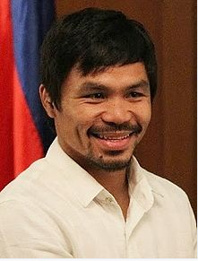

Emmanuel Dapidran "Manny" Pacquiao, PLH (/ˈpæki.aʊ/ PAK-ee-ow; Tagalog: [pɐkˈjaʊ]; born December 17, 1978) is a Filipino professional boxer and politician, currently serving as Senator of the Philippines. In boxing he has held the WBO welterweight title since 2016, and is currently in his third reign with that title.
Pacquiao is widely considered to be one of the greatest boxers of all time. He is the first and only eight-division world champion, having won eleven major world titles, as well as being the first boxer to win the lineal title in five different weight classes. Pacquiao is also the third boxer in history to win major world titles in three of the original eight weight divisions of boxing, also known as the "glamour divisions" (flyweight, featherweight, and welterweight).
He was named "Fighter of the Decade" for the 2000s by the Boxing Writers Association of America (BWAA), WBC, and WBO. He is also a three-time Ring magazine and BWAA Fighter of the Year, winning the award in 2006, 2008, and 2009; and the Best Fighter ESPY Award in 2009 and 2011. BoxRec ranks him as the greatest Asian fighter of all time. Pacquiao was long rated as the best pound for pound boxer in the world by most sporting news and boxing websites, including ESPN, Sports Illustrated, Sporting Life, Yahoo! Sports, About.com, BoxRec, and The Ring, beginning from his climb to lightweight until his losses in 2012. He is also the longest reigning top-ten boxer on The Ring's pound for pound list.
Pacquiao has generated approximately 19.2 million in pay-per-view buys and $1.2 billion in revenue from his 23 PPV bouts. According to Forbes, he was the second highest paid athlete in the world as of 2015.
Beyond boxing, Pacquiao has participated in basketball, business, acting, music recording and politics. In May 2010, Pacquiao was elected to the House of Representatives in the 15th Congress of the Philippines, representing the province of Sarangani. He was re-elected in 2013 to the 16th Congress of the Philippines. In June 2016, Pacquiao was elected as a senator and will serve a six-year term until 2022.